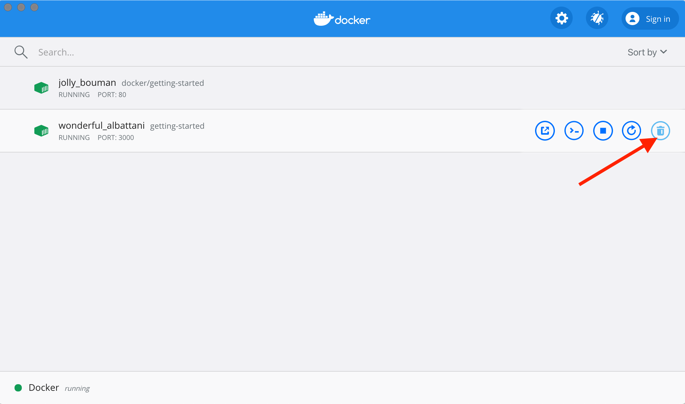

Update the application
As a small feature request, we've been asked by the product team to change the "empty text" when we don't have any todo list items. They would like to transition it to the following:
You have no todo items yet! Add one above!
Pretty simple, right? Let's make the change.
Update the source code
1.In the src/static/js/app.js file, update line 56 to use the new empty text.
- <p className="text-center">No items yet! Add one above!</p>
+ <p className="text-center">You have no todo items yet! Add one above!</p>
2.Let's build our updated version of the image, using the same command we used before.
docker build -t node-todo .
3.Let's start a new container using the updated code.
docker run -dp 3000:3000 node-todo
Uh oh! You probably saw an error like this (the IDs will be different):
docker: Error response from daemon: driver failed programming external connectivity on endpoint laughing_burnell
(bb242b2ca4d67eba76e79474fb36bb5125708ebdabd7f45c8eaf16caaabde9dd): Bind for 0.0.0.0:3000 failed: port is already allocated.
So, what happened? We aren't able to start the new container because our old container is still
running. The reason this is a problem is because that container is using the host's port 3000 and
only one process on the machine (containers included) can listen to a specific port. To fix this,
we need to remove the old container.
Replacing our Old Container
To remove a container, it first needs to be stopped. Once it has stopped, it can be removed. We have two ways that we can remove the old container. Feel free to choose the path that you're most comfortable with.
Removing a container using the CLI
1.Get the ID of the container by using the docker ps command.
docker ps
2.Use the docker stop command to stop the container.
# Swap out <the-container-id> with the ID from docker ps
docker stop <the-container-id>
3.Once the container has stopped, you can remove it by using the docker rm command.
docker rm <the-container-id>
You can stop and remove a container in a single command by adding the "force" flag to the
docker rmcommand. For example:docker rm -f <the-container-id>
Removing a container using the Docker Dashboard
If you open the Docker dashboard, you can remove a container with two clicks! It's certainly much easier than having to look up the container ID and remove it.
-
With the dashboard opened, hover over the app container and you'll see a collection of action buttons appear on the right.
-
Click on the trash can icon to delete the container.
-
Confirm the removal and you're done!

Starting our updated app container
1.Now, start your updated app.
docker run -dp 3000:3000 node-todo
2.Refresh your browser on http://localhost:3000 and you should see your updated help text!

Recap
While we were able to build an update, there were two things you might have noticed:
- All of the existing items in our todo list are gone! That's not a very good app! We'll talk about that shortly.
- There were a lot of steps involved for such a small change. In an upcoming section, we'll talk about how to see code updates without needing to rebuild and start a new container very time we make a change.
Before talking about persistence, we'll quickly see how to share these images with others.